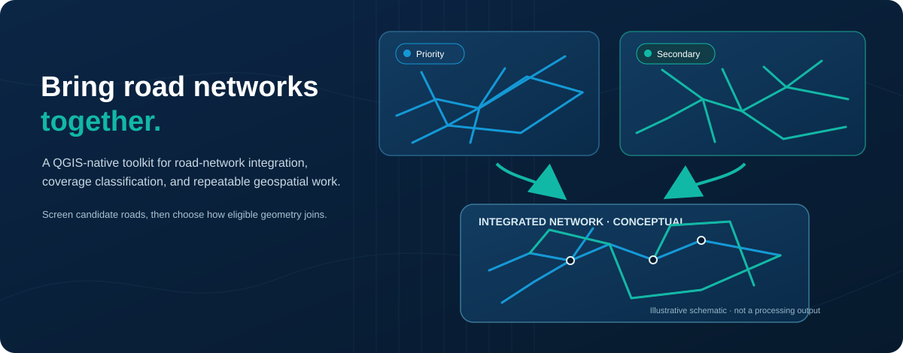
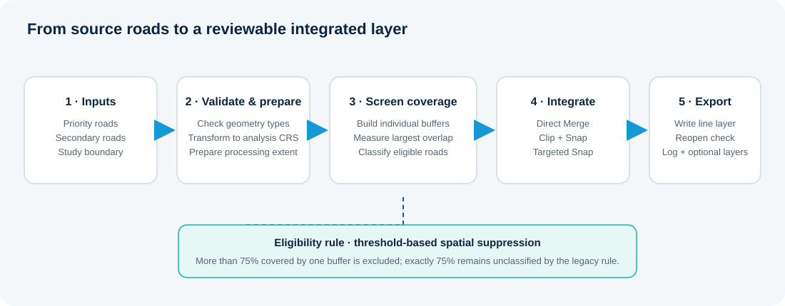

Assess coverage
Measure secondary-road overlap against individual priority-road buffers and classify candidate roads.
Explore capabilities →A QGIS plugin for road network integration
Combine a trusted priority road network with useful roads from a secondary dataset. Assess coverage, classify candidate roads, and choose how they are integrated.
Designed for GIS analysts, transport planners, researchers and geospatial teams.

What it does
Different road datasets rarely have identical coverage or geometry. The toolkit provides a repeatable way to identify potentially missing roads and integrate eligible features using a method suited to your analysis.
Measure secondary-road overlap against individual priority-road buffers and classify candidate roads.
Explore capabilities →Select Direct Merge, Clip + Snap, or Targeted Snap according to the desired geometry treatment.
Compare methods →Export an integrated multiline network and optionally retain diagnostic layers and a processing log.
Read documentation →How it works
The workflow keeps the priority network as the reference while screening and processing eligible secondary roads.

Priority roads, secondary roads and a study-area boundary.
Transform inputs to a suitable projected analysis CRS.
Classify secondary roads using buffer overlap.
Apply the selected merge and geometry method.
Export the result and inspect diagnostics where needed.
Understand how each method handles trimming, overlaps and endpoint snapping.